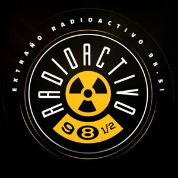
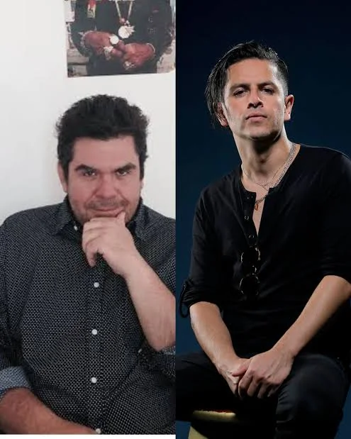
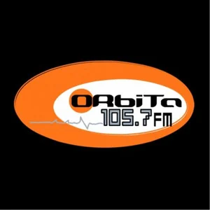

¿REACTOR CERRÓ LAS PUERTAS AL PUNK MEXICANO?
LA POLÉMICA ENTRE RULO, ALLISON Y EL PODER DE LA RADIO
Las declaraciones de Erik Canales reavivan una controversia que comenzó hace más de dos décadas. Desde 2004, músicos mexicanos cuestionaban los criterios de programación de Reactor 105.7, mientras sus responsables defendían la independencia editorial de la emisora.

La historia del rock mexicano también está marcada por las bandas que consiguieron abrirse camino sin el respaldo de los grandes medios. Durante los años 2000, cuando la radio todavía representaba una plataforma fundamental para llegar a nuevas audiencias, conseguir un espacio en una estación influyente podía marcar una diferencia importante en la trayectoria de un grupo.
Pero ¿qué sucedía con las bandas que no encajaban en los criterios de quienes decidían qué música debía escucharse?
Esa pregunta ha vuelto a cobrar relevancia a partir de las declaraciones de Erik Canales, vocalista de Allison, en una entrevista con Javier Paniagua, que ha reavivado el debate sobre el papel de Reactor 105.7 FM, su entonces responsable de programación, Raúl David Vázquez, mejor conocido como Rulo, y el directivo Marcelo Lara.
La entrevista de Erik Canales
Video: entrevista de Erik Canales con Javier Paniagua — vía Facebook
Aunque la polémica parece reciente, los antecedentes periodísticos muestran que las críticas hacia la emisora comenzaron prácticamente desde su nacimiento.
Reactor 105.7: del nacimiento de una alternativa a las primeras críticas
El 15 de octubre de 2004, la frecuencia 105.7 FM de la Ciudad de México inició una nueva etapa con Reactor, una propuesta del Instituto Mexicano de la Radio (IMER) que sustituyó a Órbita.
La estación incorporó a figuras vinculadas con Radioactivo 98.5, emisora que había dejado de transmitir ese mismo año y que se había convertido en un referente para la música alternativa.

Sin embargo, el cambio no fue bien recibido por todos los sectores de la escena nacional.
Apenas unas semanas después, el 1 de diciembre de 2004, el periódico La Jornada publicó una nota en la que distintos músicos denunciaban la reducción de espacios para el rock mexicano.
Entre las voces inconformes figuraban Fratta, el Señor González y representantes de agrupaciones como Dildo, Eufemia, Dragón Zaga, Hydro y Vedette.
Los señalamientos apuntaban a una supuesta marginación de proyectos nacionales, algunos de los cuales habrían sido desplazados a horarios de madrugada.
Fratta también cuestionó posibles conflictos de interés relacionados con la promoción de conciertos y producciones musicales por parte de personas vinculadas a la emisora.
Estas acusaciones fueron publicadas en su momento, aunque ello no significa que las presuntas irregularidades hayan quedado demostradas.
Lo relevante es que el descontento no surgió con Allison ni con las redes sociales: la discusión sobre quién tenía acceso a Reactor ya existía desde 2004.
Rulo respondió en 2007: Allison y Panda no encajaban en sus criterios
Tres años después, la controversia seguía vigente.
El 22 de diciembre de 2007, La Jornada publicó una entrevista titulada "Reactor 105.7 no tiene favoritismos ni es servil con las 'grandes' disqueras", en la que Rulo defendió las decisiones musicales de la estación.
El entonces responsable de programación rechazó los señalamientos de favoritismo y sostuvo que más de la mitad de la música transmitida correspondía a artistas de sellos independientes.
LA FRASE CLAVE
"Allison, Massappan y Panda no forman parte de nuestra selección musical." La declaración de Rulo en 2007 demuestra que la banda ya figuraba dentro de la discusión sobre la programación de Reactor casi dos décadas antes de que la polémica volviera a circular.
Marcelo Lara, por su parte, también defendió la independencia de la estación frente a las presiones de las grandes compañías discográficas.
Para los responsables de Reactor, la selección musical respondía a una línea editorial. Para algunos músicos inconformes, esas decisiones representaban barreras para acceder a una de las plataformas más importantes de la radio alternativa mexicana.
Allison y una generación que buscaba abrirse camino
En 2006, Allison lanzó su álbum debut homónimo y comenzó a consolidarse dentro de la escena del punk melódico y el rock alternativo mexicano.
La banda formó parte de una generación que encontró en los conciertos, la televisión musical, internet y las comunidades de seguidores distintas vías para construir una audiencia.

Sin embargo, la radio todavía conservaba una influencia considerable.
Que una canción ingresara a la programación de una estación como Reactor podía significar una exposición importante, particularmente entre los jóvenes interesados en descubrir nuevos proyectos.
En ese contexto, las declaraciones recientes de Erik Canales vuelven a poner sobre la mesa una pregunta: ¿hasta qué punto las decisiones de los programadores influían en las oportunidades de las bandas mexicanas?
La entrevista de Rulo de 2007 confirma que Allison no formaba parte de su selección musical, pero no demuestra por sí sola la existencia de una campaña deliberada para perjudicar a la agrupación.
Para establecerlo sería necesario contrastar el testimonio completo de Canales con otros relatos y documentos de la época.
¿Criterios musicales o exclusión de bandas?
Una de las acusaciones más delicadas alrededor de esta controversia es la presunta concentración de poder en determinados personajes de la radio.
Sin embargo, hablar de un monopolio musical requiere hacer algunas precisiones.
Reactor era una estación pública con una identidad editorial específica. No controlaba la totalidad de la radio mexicana ni las oportunidades de difusión disponibles para los artistas.
Por otra parte, tampoco puede ignorarse que las estaciones influyentes funcionaban como filtros importantes dentro de la industria musical.
La discusión, entonces, no debería limitarse a si Rulo tenía derecho a decidir qué canciones programar. Como responsable de una propuesta radiofónica, esa selección formaba parte de sus funciones.
La cuestión es si los criterios se aplicaban de manera consistente o si pudieron existir preferencias personales, conflictos de interés o decisiones que afectaran injustificadamente a determinados proyectos.
Y es aquí donde resulta indispensable separar las opiniones de las pruebas.
Una banda podía quedar fuera de la programación por no coincidir con el perfil musical de la estación. Otra posibilidad sería que determinados estilos recibieran sistemáticamente menos espacios. Un escenario distinto, y mucho más grave, sería la existencia de instrucciones deliberadas para bloquear artistas.
Aunque las consecuencias para los músicos pudieran parecer similares, las tres situaciones requieren evidencias diferentes.
Una polémica que va más allá de Allison
El conflicto alrededor de Reactor también refleja las tensiones que acompañaron la transformación de la radio alternativa mexicana durante los primeros años del siglo XXI.
El cierre de Radioactivo, la desaparición de Órbita y el nacimiento de Reactor representaron cambios importantes para músicos y audiencias.

En diciembre de 2004, la periodista Patricia Peñaloza también publicó en La Jornada una columna crítica sobre la orientación musical de la nueva emisora, en la que recogió cuestionamientos relacionados con prejuicios musicales y actitudes excluyentes.
Las opiniones expresadas en aquellas publicaciones muestran que el debate iba mucho más allá de una disputa entre un locutor y una agrupación.
En el fondo estaba la discusión sobre el espacio que debía ocupar el rock mexicano dentro de una estación de carácter público.
¿Debía Reactor priorizar una propuesta musical definida por sus programadores o abrir mayores espacios a la diversidad de proyectos nacionales?
La respuesta nunca fue sencilla, pero el cuestionamiento sigue siendo relevante.
Lo que está documentado y lo que todavía falta demostrar
Los archivos periodísticos permiten establecer varios hechos.
Desde diciembre de 2004 existían denuncias públicas de músicos que consideraban que Reactor había reducido los espacios para proyectos nacionales.
En 2007, Rulo y Marcelo Lara defendieron públicamente los criterios de programación de la emisora y rechazaron las acusaciones de favoritismo.
En esa misma entrevista, Rulo mencionó expresamente a Allison entre las agrupaciones que no incluía en su selección musical.
Lo que esos antecedentes no permiten demostrar es que existiera una instrucción coordinada para bloquear a Allison, que las decisiones respondieran a represalias personales o que Reactor ejerciera un monopolio sobre la industria musical mexicana.
Para llegar a conclusiones de ese alcance sería necesario contar con registros de programación, testimonios independientes y otros documentos que permitan reconstruir cómo se tomaban las decisiones dentro de la emisora.
Veinte años después, la pregunta sigue abierta
La polémica entre Allison, Rulo y Reactor no puede entenderse únicamente como un enfrentamiento de opiniones musicales.
Es parte de una discusión más amplia sobre el papel de los medios de comunicación en el desarrollo de las escenas independientes y sobre la influencia que ejercen quienes deciden qué artistas reciben exposición.
Los testimonios de músicos inconformes merecen ser escuchados, del mismo modo que las respuestas de los responsables de la programación deben considerarse para reconstruir el contexto.
EL PUNTO DE FONDO
La historia demuestra que las críticas hacia Reactor existieron desde sus primeros meses. Lo que todavía está por comprobar es si detrás de aquellas decisiones hubo algo más que diferencias de criterio musical. Porque, al final, la pregunta no es si todas las bandas tenían derecho a sonar en Reactor, sino quién decidía cuáles merecían una oportunidad y bajo qué criterios se tomaban esas decisiones.
Más de veinte años después, el debate continúa.
Y quizá sea momento de responderlo con algo más que recuerdos, acusaciones o defensas: con documentos y pruebas.
📰 FUENTES Y ANTECEDENTES PERIODÍSTICOS
- La Jornada, 1 de diciembre de 2004: "Los locutores de Reactor utilizan la emisora para beneficio personal: Fratta".
- La Jornada, 3 de diciembre de 2004: "Llegado el cambio".
- La Jornada, 22 de diciembre de 2007: "Reactor 105.7 no tiene favoritismos ni es servil con las 'grandes' disqueras".
- La Jornada, 8 de noviembre de 2013: "Reactor a 9 años: retrospectiva y futuro incierto".
- Time Out México, 11 de noviembre de 2014: "Préndele al Reactor".
- Entrevista de Erik Canales con Javier Paniagua, identificada con fecha del 13 de abril de 2024, pendiente de confirmar como origen del fragmento que reavivó la controversia.